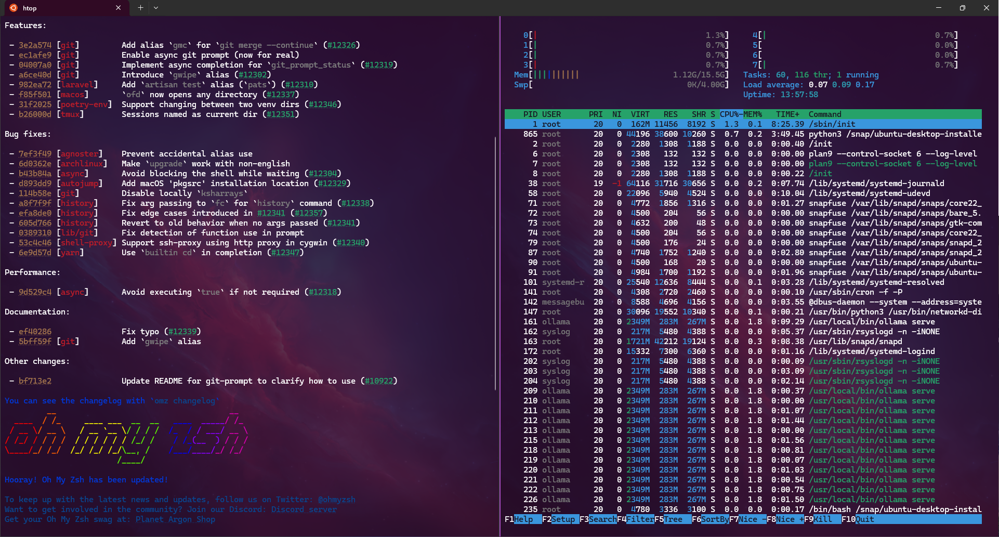

I recently got the itch of purchasing a new laptop for development and learning, so I took the chance on Black Friday and got myself a nice HP Stream 14. I am a long-time Windows user so I thought it would be a great opportunity to get started with Linux and set up a developer workstation while documenting the process.
Objectives
I wanted this machine to be equipped for:
- data science and machine learning investigation
- writing
- web and software development, mostly in Python
- indie game development
- cloud deployments
For that, I will be using tools like Visual Studio Code, Zsh (with Oh My Zsh), Godot and a nice terminal emulator like Tilix.
Linux
I searched for a bit trying to decide which Linux flavor I would use. I tried Elementary OS and Ubuntu Budgie, but finally decided myself for the true and tested Ubuntu 18.04 LTS, which grants support and maintenance for up to 5 years. After all, I just want to learn and have fun with this laptop.
At first, I experienced some issues with the system. For example, the Wi-Fi adapter wasn’t recognised by the OS, so I had no internet connection. The Stream 14 doesn’t have an Ethernet port, so that wasn’t an option either. Finally I had to use my phone’s connection through USB thethering so I could run the following commands:
sudo apt-get upgrade
sudo apt-get updateThis fixes any broken packages. After that, I was able to install Git and clone a repo with the drivers for my adapters. This got my connection ready to start the real setup. The details are probably specific to the factory settings on my laptop so I won’t really go over them, but let me know if you’re stuck with a similar issue and I’ll try to help out.
Coding tools
That’s my default editor and developer tool. I love the extensible and customizable design, and the many productivity hacks you can take advantage of.
Tilix is an awesome terminal emulator with integrated multiplexing (like tmux) and can speed up your workflow significantly if used properly. I also like Hyper as it is very simple and lightweight.
Since I started dabbling in game development, Godot has been the most approachable engine I have encountered. I tried PhaserJS briefly but my JavaScript is not that polished and I find an engine to be more more hollistic in developmnet as opposed to a framework like Phaser.
Programming languages
Even though Python comes installed in Linux distros by default, its package manager pip wasn’t available on my system. A swift sudo apt-get install pip3 took that problem away. Take note of the pip3 part, which installs the module for Python 3.
I also installed Julia 1.3 to run some benchmarks against Python and try my hand at some development with this growing language.
I added some other stuff, languages like V and Lua to have more options to play with. As you can see, I have installed many different languages so I can mix and match my learning and find the niche I am most comfortable in. Many advocate against a “jack of all trades” approach, but I find breadth of knowledge more useful than depth in general situations. You can always specialise if necessary.
I am thinking of trying Go, but I will leave that for later because I don’t really want to bite off more than I can chew. Which I am already doing, anyway.
Closing thoughts
I have been using this setup for a few months now and I am very satisfied with my decision. My Linux desktop is fast and sleek with a good-looking interface, and installing stuff is as easy as writing one shell command. I can definitely see why many developers use Linux, and I will probably make a full switch from Windows when possible.